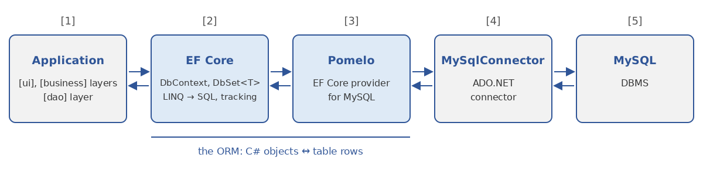
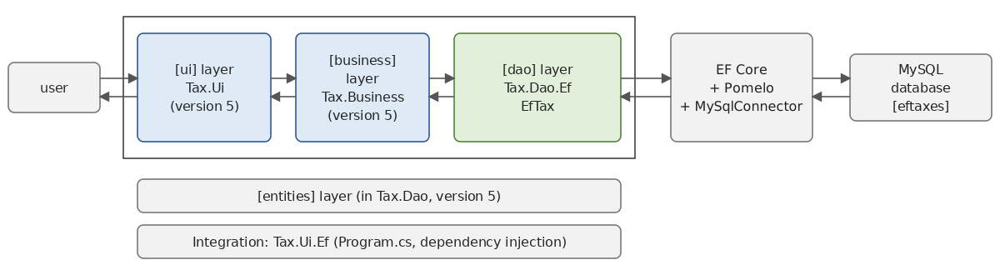

11. Entity Framework Core
Das vorherige Kapitel hat gezeigt, wie eine .NET-Anwendung über einen ADO.NET-Konnektor mit einer Datenbank kommuniziert: Es wird eine Verbindung geöffnet, es werden SQL-Befehle geschrieben, die Ergebniszeilen werden Spalte für Spalte gelesen und in Objekte kopiert. Dieser Kopiervorgang – von Zeilen in Objekte und von Objekten in die Befehle [INSERT], [UPDATE] und [DELETE] – ist repetitiv. Er lässt sich mit einem Werkzeug automatisieren: einem ORM (Object-Relational Mapper). Dieses Kapitel stellt Microsofts Entity Framework Core (EF Core) vor.
Der Kurs von 2008 erwähnte ORM nicht: Er nannte am Ende seines Kapitels über Datenbanken lediglich „Datenzugriffs-Frameworks von Drittanbietern“ (NHibernate, iBatis) und LINQ. Entity Framework erschien einige Monate später (2008, mit .NET 3.5 SP1), und 2012 widmete der Autor ihm einen Kurs mit dem Titel „Introduction to Entity Framework 5 Code First Through Examples“. Dieses Kapitel ist vollständig neu. Es baut auf der Beispieldatenbank der Artikel aus Kapitel 10 auf und schließt mit Version 7 der Anwendung zur Steuerberechnung, deren [dao]-Schicht EF Core verwendet.
11.1. Was ist ein ORM?
11.1.1. Objekte und Tabellen
Eine C#-Anwendung arbeitet mit Objekten: Ein Artikel hat einen Namen, einen Preis und einen Lagerbestand; eine Bestellung hat einen Kunden und eine Liste von Bestellpositionen, die jeweils auf einen Artikel verweisen. Eine relationale Datenbank speichert dieselben Informationen in Tabellen: eine Zeile in der Tabelle [articles] pro Artikel, eine Zeile in der Tabelle [orders] pro Bestellung, wobei die Beziehungen zwischen den Zeilen durch Fremdschlüssel ausgedrückt werden. Die beiden Welten passen nicht ganz zusammen:
- Ein Objekt referenziert andere Objekte direkt ([order.Client]); eine Zeile enthält den Primärschlüsselwert einer anderen Zeile ([ClientId]);
- Ein Objekt kann eine Collection enthalten ([order.Lines]); eine Tabelle enthält nur Einzelwerte; die Collection wird durch die Zeilen einer anderen Tabelle dargestellt, die auf die Bestellung verweisen;
- Die C#-Typen ([string], [decimal], [DateOnly], [bool]) und die SQL-Typen ([varchar(30)], [decimal(10,2)], [date], [tinyint(1)]) sind nicht dieselben;
- Objekte werden mit C# (und LINQ) abgefragt, Tabellen mit SQL.
Ein ORM schlägt die Brücke zwischen den beiden Welten. Wir definieren das Mapping zwischen Klassen und Tabellen (das Modell) ein für alle Mal; danach übernimmt es Folgendes:
- Es übersetzt in C# geschriebene LINQ-Abfragen in SQL-[SELECT]-Befehle;
- Es erstellt Objekte aus den gelesenen Zeilen (das nennt man Materialisierung);
- Es speichert die gelesenen Objekte und erkennt diejenigen, die geändert, hinzugefügt oder gelöscht wurden;
- Es erzeugt die [INSERT]-, [UPDATE]-, und [DELETE]-Befehle , die diese Änderungen in der Datenbank abbilden;
- und bei Bedarf erstellt und aktualisiert es das Datenbankschema (Tabellen, Spalten, Indizes) anhand der Klassen.
Die Architektur einer Anwendung, die EF Core mit MySQL verwendet, sieht wie folgt aus:

- [1]: die Anwendung. Ihre [dao]-Schicht kommuniziert nicht mehr mit einem ADO.NET-Konnektor, sondern mit EF Core, über ein [DbContext]-Objekt und LINQ-Abfragen;
- [2]: EF Core, unabhängig vom DBMS: Modell, Übersetzung von LINQ-Abfragen, Änderungsverfolgung, Migrationen;
- [3]: der für das DBMS spezifische EF-Core-Provider (hier Pomelo für MySQL): Er kennt den SQL-Dialekt des DBMS und seine Spaltentypen;
- [4]: der ADO.NET-Konnektor für das DBMS, derjenige aus Kapitel 10 (MySqlConnector): EF Core ersetzt ADO.NET nicht, sondern verwendet es;
- [5]: das DBMS.
11.1.2. EF Core und Entity Framework 6
Es gibt zwei Produkte namens Entity Framework:
- Entity Framework 6 (EF 6), das ursprüngliche Produkt, entwickelt für das .NET Framework unter Windows (seit Version 6.3 funktioniert es auch unter .NET Core und seinen Nachfolgern). Es wird weiterhin gepflegt, aber nicht mehr aktiv weiterentwickelt;
- Entity Framework Core, eine vollständige Neuentwicklung, die 2016 mit .NET Core erschien. Es läuft auf allen .NET-Plattformen (Windows, Linux, macOS) und ist die Version, die alle neuen Funktionen erhält. Seine Versionsnummer folgt der von .NET: EF Core 8 mit .NET 8, EF Core 9 mit .NET 9, EF Core 10 mit .NET 10.
Für eine neue Anwendung verwenden wir EF Core. Beide Produkte haben ähnliche APIs ([DbContext], [DbSet<T>], LINQ, Migrationen), sodass das hier Gesagte größtenteils auch für EF 6 gilt.
11.1.3. Provider
EF Core greift über einen Provider auf ein DBMS zu, der in einem NuGet-Paket verteilt wird. Microsoft stellt die Provider für SQL Server, SQLite und Azure Cosmos DB bereit; die übrigen werden von den Herstellern der DBMS oder von der Community geschrieben: [Npgsql.EntityFrameworkCore.PostgreSQL] für PostgreSQL, [Oracle.EntityFrameworkCore] für Oracle, [Pomelo.EntityFrameworkCore.MySql] und [MySql.EntityFrameworkCore] (von Oracle) für MySQL. Wir verwenden Pomelo, den am weitesten verbreiteten MySQL-Provider, der auf dem Konnektor [MySqlConnector] aus Kapitel 10 basiert.
Ein Provider wird für eine bestimmte Version von EF Core kompiliert: Pomelo 9 funktioniert mit EF Core 9, und Pomelo-Versionen erscheinen oft mehrere Monate nach denen von EF Core. Der Kurs verwendet EF Core 9.0.0 und Pomelo 9.0.0 unter .NET 10. Diese Kombination funktioniert: EF Core 9 zielt auf .NET 8 ([net8.0]), und eine für .NET 8 kompilierte Bibliothek funktioniert unter .NET 10 ohne Änderung. Der Wechsel zu EF Core 10 erfolgt durch Ändern der Versionsnummern der Pakete; der Code dieses Kapitels sollte dann ohne Änderung funktionieren, abgesehen von einigen kleinen Details im erzeugten SQL. Im Abschnitt über LINQ werden wir jedoch auf eine kleine Inkompatibilität zwischen EF Core 9 und dem C#-14-Compiler stoßen.
Die in diesem Kapitel verwendeten Pakete sind die folgenden:
Paket | Rolle |
[Microsoft.EntityFrameworkCore] 9.0.0 | EF Core selbst |
[Pomelo.EntityFrameworkCore.MySql] 9.0.0 | Der MySQL-Provider; er enthält [Microsoft.EntityFrameworkCore.Relational] und [MySqlConnector] |
[Microsoft.EntityFrameworkCore.Design] 9.0.0 | der Code, der vom Befehlszeilenwerkzeug [dotnet ef] (Migrationen) verwendet wird |
Werkzeug [dotnet-ef] 9.0.0 | das Befehlszeilenwerkzeug [dotnet ef] |
Das Werkzeug [dotnet ef] wird einmalig auf dem Entwicklungsrechner installiert:
Die „globalen“ Werkzeuge für .NET werden im Ordner [.dotnet/tools] innerhalb des Home-Verzeichnisses des Benutzers installiert, den das Installationsprogramm des SDK zum Ausführungspfad hinzufügt (unter Linux müssen Sie ihn selbst hinzufügen: [export PATH=$PATH:$HOME/.dotnet/tools]).
11.1.4. Code First und Database First
Das EF-Core-Modell (das Mapping zwischen Klassen und Tabellen) kann auf zwei Arten erstellt werden:
- Code First: Sie schreiben die C#-Klassen, und EF Core leitet daraus das Datenbankschema ab, das es selbst erstellen und dann bei der Weiterentwicklung der Anwendung aktualisieren kann (Migrationen). Dies ist der Ansatz dieses Kapitels und des Kurses des Autors von 2012;
- Database First: Die Datenbank existiert bereits, und Sie generieren die Klassen aus ihrem Schema mit dem Befehl [dotnet ef dbcontext scaffold]. Dieser Ansatz wird für Anwendungen verwendet, die mit einer bestehenden Datenbank arbeiten müssen. Der generierte Code ähnelt dem, was wir von Hand schreiben würden.
11.2. Ein erstes Beispiel
11.2.1. Das Projekt
Jedes Beispiel in diesem Kapitel ist ein Konsolenprojekt: Das für Migrationen verwendete Werkzeug [dotnet ef] benötigt eine Projektdatei [.csproj]. Die Projekte sind in der Projektmappe [11-efcore/11-efcore.slnx] zusammengefasst. Das erste, [First], wird mit den folgenden Befehlen erstellt:
Seine Projektdatei sieht wie folgt aus:
- Zeilen 12–13: die beiden Pakete, die von [dotnet add package] hinzugefügt wurden.
Die verwendete Datenbank ist die Datenbank [efarticles] auf dem lokalen MySQL-Server, der der Laragon-Server ist (siehe Anhänge). Sie muss nicht existieren: EF Core erstellt sie.
11.2.2. Die Entität [Article]
Eine Klasse, deren Objekte in einer Tabelle gespeichert werden, heißt Entität. Unsere erste Entität ist ein Artikel eines Geschäfts, wie in der Tabelle [articles] aus dem Kurs von 2008, die in Kapitel 10 behandelt wurde:
- Zeile 4: Eine gewöhnliche C#-Klasse. Sie erbt von keiner Klasse aus EF Core und hat keine Attribute; man spricht von einem POCO (Plain Old CLR Object);
- Zeile 7: Die Eigenschaft [Id] wird der Primärschlüssel der Tabelle sein. Das ist eine Konvention von EF Core: Eine Eigenschaft mit dem Namen [Id] (oder [ArticleId], dem Klassennamen gefolgt von [Id]) ist der Primärschlüssel. Da sie vom Typ Integer ist, werden ihre Werte vom DBMS generiert (Spalte [AUTO_INCREMENT] von MySQL);
- Zeilen 9–12: Jede öffentliche Eigenschaft mit Lese- und Schreibzugriff wird zu einer Spalte mit demselben Namen. Die Eigenschaft [Name] wird mit einer leeren Zeichenfolge initialisiert, um den Compiler zufriedenzustellen (Nullable-Typen aktiviert: Eine Eigenschaft vom Typ [string] darf nicht [null] bleiben);
- Zeile 15: eine praktische Darstellung des Artikels.
11.2.3. Kontext
Der Zugriff auf die Datenbank erfolgt über ein Objekt vom Typ [DbContext]:
- Zeile 7: Die Klasse [DbContext] stammt aus EF Core. Ein [ArticlesContext]-Objekt stellt eine Arbeitssitzung mit der Datenbank dar: Es öffnet die Verbindung bei Bedarf, speichert die gelesenen Entitäten und kann deren Änderungen speichern;
- Zeile 10: Ein [DbSet<Article>] repräsentiert die Tabelle der Artikel. Hier werden LINQ-Abfragen ausgeführt und Artikel hinzugefügt oder gelöscht. Die Eigenschaft ist als Expression-bodied Member definiert, der [Set<Article>()] aufruft: Jedes im Kontext deklarierte [DbSet<T>] führt den Typ [T] in das Modell ein;
- Zeile 13: Die Methode [OnConfiguring] wird von EF Core bei der ersten Verwendung des Kontexts aufgerufen, um ihn zu konfigurieren;
- Zeile 15: die Verbindungszeichenfolge, dieselbe wie in Kapitel 10: Server, Port, Datenbank, Benutzername und Kennwort (leer für den Laragon-Benutzer [root]);
- Zeile 18: Der Kontext verwendet den Pomelo-Provider. Der zweite Parameter gibt die Version des MySQL-Servers an: Das erzeugte SQL hängt davon ab, da bestimmte Funktionen nur in neueren Versionen verfügbar sind. Laragon stellt MySQL 8 bereit; wir geben die Version 8.0.36 an. Pomelo bietet außerdem [ServerVersion.AutoDetect(connection)], das den Server abfragt, um seine Version zu ermitteln. Das ist praktisch, verursacht aber bei jeder Konfiguration eines Kontexts eine zusätzliche Verbindung, und das erzeugte SQL hängt dann vom vorgefundenen Server ab. Die explizite Angabe einer Version macht das Verhalten der Anwendung reproduzierbar;
- Zeile 20: Die Methode [LogTo] weist EF Core an, sein Protokoll mit der Methode [Console.WriteLine] auszugeben. Wir behalten nur die Meldungskategorie [DbLoggerCategory.Database.Command] – die der ausgeführten SQL-Befehle – auf der Stufe [LogLevel.Information] bei. Ohne diesen Filter ist das Protokoll sehr umfangreich. Das an den Server gesendete SQL anzusehen, ist der beste Weg, um zu verstehen, was EF Core tut: Wir werden dies in allen Beispielen tun.
11.2.4. Das Programm
- Zeile 4: erstellt den Kontext. Eine [using]-Deklaration (C# 8) stellt sicher, dass er am Ende des Programms freigegeben wird ([Dispose]), wodurch eine eventuell geöffnete Verbindung geschlossen wird;
- Zeile 7: [context.Database.EnsureDeleted()] löscht die Datenbank, falls sie existiert;
- Zeile 8: [context.Database.EnsureCreated()] erstellt die Datenbank und ihre Tabellen anhand des Schemas. Diese beiden Methoden eignen sich für Beispiele und Tests; eine reale Anwendung aktualisiert ihre Datenbank mit Migrationen, die wir später behandeln;
- Zeilen 11–13: Drei Artikel werden zu [DbSet] hinzugefügt. Es wurde noch nichts an den Server gesendet: Der Kontext merkt sich lediglich, dass diese drei Objekte einzufügen sind. Wir weisen der Eigenschaft [Id] keinen Wert zu; sie wird vom DBMS generiert;
- Zeile 15: [SaveChanges] sendet dem Server alle erforderlichen SQL-Befehle, um die gespeicherten Änderungen zu sichern, und liefert die Anzahl der betroffenen Zeilen zurück;
- Zeile 20: eine LINQ-Abfrage auf [DbSet]: die Artikel in alphabetischer Reihenfolge. Sie wird vom DBMS ausgeführt, sobald die [foreach]-Schleife mit der Iteration beginnt.
Ergebnisse:
Anmerkungen:
- Jedem SQL-Befehl geht ein zweizeiliger Kopf voraus: der Ereignistyp ([CommandExecuted]), die Ausführungszeit und die Parameter des Befehls;
- Zeile 4: [EnsureDeleted] hat die Datenbank gelöscht, die bereits existierte (das Programm war schon einmal ausgeführt worden);
- Zeilen 7–20: [EnsureCreated] hat die Datenbank erstellt, ihr den Zeichensatz [utf8mb4] (den vollständigen Unicode-Zeichensatz von MySQL) zugewiesen und dann die Tabelle [Articles] aus der Entität [Article] erstellt: Der Tabellenname ist der der Kontexteigenschaft [DbSet], die Spalten sind nach den Eigenschaften benannt, und die Spalte [Id] ist der Primärschlüssel mit generiertem Wert ([AUTO_INCREMENT]). Alle Spalten sind [NOT NULL]: Die Typen [int] und [decimal] lassen den Wert [null] nicht zu, ebenso wenig der Typ [string], da Nullable-Typen aktiviert sind (wir kommen später darauf zurück);
- Beachten Sie die Standardtypen: [longtext] für einen String (Text beliebiger Länge) und [decimal(65,30)] für einen [decimal] (65 Stellen, davon 30 nach dem Komma). Das sind selten die gewünschten Typen: Der folgende Abschnitt zeigt, wie man sie festlegt;
- Zeilen 21–41: [SaveChanges] hat einen einzigen Befehl gesendet, der drei parametrisierte [INSERT]-Befehle enthält. Auf jeden folgt ein [SELECT] , das den von MySQL generierten Primärschlüssel zurückliest ([LAST_INSERT_ID()]): EF Core kopiert ihn in die Eigenschaft [Id] des eingefügten Objekts. Die Parameterwerte sind maskiert ('?'): Es handelt sich um Anwendungsdaten, die vertraulich sein können. Beim Debuggen lassen sie sich anzeigen, indem man der Kontextkonfiguration die Option [.EnableSensitiveDataLogging()] hinzufügt;
- Zeilen 42–50: Die LINQ-Abfrage [context.Articles.OrderBy(a => a.Name)] wurde in einen Befehl [SELECT ... ORDER BY] übersetzt. EF Core hat für jede gelesene Zeile ein [Article]-Objekt erstellt.
Wir haben weder SQL-Befehle noch Code zum Lesen von Spalten geschrieben: Genau das ist der Sinn eines ORM. Man sieht auch, dass dies die Notwendigkeit, SQL zu verstehen, nicht beseitigt: Um zu beurteilen, ob das erzeugte SQL korrekt und effizient ist, muss man es lesen können.
11.3. Das Modell
EF Core erstellt sein Modell aus den Entitäten in drei Schritten:
- Zunächst wendet es seine Konventionen an;
- es ergänzt oder korrigiert sie mithilfe der Annotationen (Attribute), die auf die Entitäten angewendet werden;
- schließlich wendet es die in C# geschriebene Konfiguration in der Methode [OnModelCreating] des Kontexts an: die Fluent API.
11.3.1. Die Konventionen
Die wesentlichen davon haben wir im ersten Beispiel gesehen:
- Jede öffentliche Eigenschaft mit einem [get]-Getter und einem [set]- (oder [init]-)Setter wird in einer Spalte gleichen Namens gespeichert;
- Die Eigenschaft [Id] oder [<Entity>Id] ist der Primärschlüssel; ist sie eine ganze Zahl, werden ihre Werte vom DBMS generiert;
- Der Tabellenname ist der der Eigenschaft [DbSet] des Kontexts (oder, falls es keine gibt, der Name der Klasse);
- Eine Eigenschaft eines Nullable-Typs ([int?], [DateOnly?], [string?]) ergibt eine Spalte [NULL]; eine Eigenschaft eines Nicht-Nullable-Typs ([int], [decimal], [string] bei aktivierten Nullable-Referenztypen) ergibt eine Spalte [NOT NULL];
- Eine Eigenschaft, die auf eine andere Entität oder eine Collection von Entitäten verweist, definiert eine Beziehung (wir behandeln dies später).
11.3.2. Annotationen und Fluent API
Das Projekt [Model] definiert zwei Entitäten, die auf zwei verschiedene Arten konfiguriert sind. Die erste wird mit Annotationen konfiguriert:
- Zeilen 1–2: Die verwendeten Attribute gehören zu diesen beiden Namespaces von .NET. Sie sind nicht spezifisch für EF Core: Die Validierungsattribute ([Required], [MaxLength]) werden auch zur Validierung von Daten in ASP.NET-Core-Formularen verwendet;
- Zeile 7: der Tabellenname;
- Zeilen 11–12: Der Primärschlüssel heißt nicht [Id]; das Attribut [Key] kennzeichnet ihn;
- Zeilen 15–16: eine erforderliche Spalte ([Required]: [NOT NULL]) mit höchstens 50 Zeichen ([MaxLength(50)]: [varchar(50)]). [Required] ist hier redundant, da der Nicht-Nullable-Typ [string] ausreicht, um die Spalte erforderlich zu machen; vor C# 8 war es unerlässlich;
- Zeilen 19–20: Der Typ [string?] legt eine optionale Beschreibung fest: Die Spalte akzeptiert den Wert [NULL];
- Zeilen 23–24: [Column] legt den Spaltennamen und ihren SQL-Typ fest: [decimal(10,2)], 10 Stellen, davon 2 Nachkommastellen;
- Zeile 27: ein optionales Datum. Der Typ [DateOnly] (.NET 6) stellt ein Datum ohne Uhrzeit dar: Pomelo ordnet ihm den SQL-Typ [date] zu;
- Zeilen 30–31: [NotMapped] schließt eine Eigenschaft vom Modell aus. Hier ist das unnötig: Eine Eigenschaft ohne Zugriffsmethode ([set]) wird nicht registriert. Das Attribut dokumentiert die Absicht.
Die zweite Entität hat keine Attribute:
Sie wird im Kontext über die Fluent API konfiguriert:
- Zeile 13: Die Datenbank [efmodel] wird nie existieren: Dieser Kontext dient ausschließlich dazu, das Modell zu untersuchen, wofür keine Verbindung erforderlich ist (die Serverversion wird explizit angegeben);
- Zeile 18: Die Methode [OnModelCreating] erhält ein [ModelBuilder]-Objekt, mit dem das Modell beschrieben wird. Sie wird nur einmal pro Kontexttyp aufgerufen: EF Core speichert das Modell im Cache;
- Zeile 20: [Entity<Supplier>(...)] erhält ein Lambda, das die Entität [Supplier] konfiguriert. Jede Methode gibt das Konfigurationsobjekt zurück, wodurch sich Aufrufe verketten lassen: daher der Name „Fluent API“;
- Zeile 22: der Tabellenname;
- Zeile 23: Der Primärschlüssel ist die Eigenschaft [Number];
- Zeile 24: eine erforderliche Spalte mit höchstens 60 Zeichen;
- Zeile 25: ein eindeutiger Index auf dem Firmennamen: Keine zwei Lieferanten können denselben haben. Es gibt kein äquivalentes Validierungsattribut; EF Core stellt das Attribut [Index] bereit, das auf die Klasse gesetzt wird und das wir für die Artikel verwenden werden;
- Zeile 26: Die Eigenschaft [Phone] wird in der Spalte [tel] gespeichert;
- Zeile 27: Die Spalte [CreationDate] hat einen vom DBMS berechneten Standardwert. Beim Einfügen sendet EF Core keinen Wert für diese Spalte, wenn die Eigenschaft den Standardwert ihres Typs hat, sodass das DBMS [CURRENT_TIMESTAMP] verwenden kann.
Alles, was Annotationen leisten, lässt sich auch mit der Fluent API erreichen, und die Fluent API erlaubt noch mehr (Indizes, Standardwerte, zusammengesetzte Schlüssel, komplexe Beziehungen). Annotationen haben den Vorteil, die Konfiguration direkt neben die Eigenschaft zu setzen; die Fluent API erlaubt es den Entitäten, unabhängig von EF Core zu bleiben, und bündelt die Konfiguration an einer einzigen Stelle. Die beiden werden oft gemischt: Bei einem Konflikt hat die Fluent API Vorrang.
Das Programm [Program.cs] zeigt das von EF Core erstellte Modell an, gefolgt vom SQL-Skript, das die Tabellen erstellen würde:
- Zeile 8: Die Eigenschaft [Model] des Kontexts bietet Zugriff auf das Modell: seine Entitäten ([IEntityType]) und für jede von ihnen ihre Eigenschaften ([IProperty]);
- Zeile 10: [ClrType] ist der C#-Typ der Entität, und [GetTableName()] ist der Name ihrer Tabelle;
- Zeilen 13–15: Für jede Eigenschaft werden der Spaltenname, ihr SQL-Typ, die Angabe, ob sie den Wert [NULL], akzeptiert, und die Angabe, ob sie Teil des Primärschlüssels ist, angezeigt;
- Zeile 22: [Database.GenerateCreateScript()] liefert das SQL-Skript zur Tabellenerstellung, ohne es auszuführen. Es ist das Skript, das [EnsureCreated] ausführen würde.
Ergebnisse:
- Zeilen 8–12: Die Entität [Supplier] und ihre Spalten. Die SQL-Typen stammen aus der Konfiguration ([varchar(60)], [varchar(20)]) oder aus den Entscheidungen des Providers für einen C#-Typ: [int] für [int], [datetime(6)] (Mikrosekundengenauigkeit) für [DateTime];
- Zeilen 2–7: die Entität [Product]. Nullable-Eigenschaften ([DateOnly?], [string?]) ergeben Spalten [NULL]; die Eigenschaft [PriceInclTax] erscheint nicht im Modell;
- Zeilen 16–33: das Erstellungsskript. Es enthält die gesamte Konfiguration: Tabellen- und Spaltennamen, Datentypen ([NOT NULL]), Standardwerte, Primärschlüssel (mit [AUTO_INCREMENT] bei ganzzahligen Schlüsseln) und eindeutige Indizes. Textspalten verwenden den Zeichensatz [utf8mb4].
11.3.3. Nullable-Typen und NULL-Spalten
Nullable-Referenztypen (C# 8, in den Kursprojekten durch [<Nullable>enable</Nullable>] aktiviert) wirken sich auf das Modell aus: EF Core liest die vom Compiler erzeugten Nullability-Annotationen. Eine Eigenschaft vom Typ [string] ergibt eine Spalte [NOT NULL], und eine Eigenschaft vom Typ [string?] ergibt eine Spalte [NULL]. In einem Projekt, in dem Nullable-Typen nicht aktiviert sind, akzeptieren alle Textspalten [NULL], außer den mit [Required] markierten.
Sie müssen daher den Typ jeder Eigenschaft sorgfältig wählen: Er drückt sowohl eine Regel des C#-Codes („dieser Wert kann fehlen“) als auch eine Datenbankeinschränkung aus. Für eine erforderliche Eigenschaft sind zwei Schreibweisen üblich:
Die zweite ist sicherer: Der Compiler lehnt [new Article { Price = 10 }] ab, wo der Name weggelassen wurde. EF Core kann Entitäten mit [required]-Membern erstellen: Es geht nicht über den Objektinitialisierer des C#-Codes. Bei Navigationseigenschaften zu einer anderen Entität, die EF Core selbst füllt, begegnet uns die Schreibweise [= null!]: Wir werden sie bei der Behandlung der Beziehungen betrachten.
11.4. Die folgenden Beispiele: zwei gemeinsame Bibliotheken
Die Beispiele in den folgenden Abschnitten verwenden alle die Datenbank [efarticles] und ihre Tabelle [articles], die mit den sechs Artikeln aus Kapitel 10 gefüllt ist. Anstatt die Entität und den Kontext in jedem Projekt zu wiederholen, legen wir sie in einer Klassenbibliothek ab, [Articles.Data], die von den Projekten referenziert wird. Außerdem ersetzen wir das für unsere Beispiele zu ausführliche EF-Core-Protokoll durch ein kompakteres Protokoll, das in einer zweiten Bibliothek liegt, [Ef.Tools].
11.4.1. Das kompakte SQL-Protokoll
- Zeilen 12–15: ein Erweiterungsmember (C# 14, siehe Kapitel 4) vom Typ [DbContextOptionsBuilder], dem Typ des Parameters von [OnConfiguring]. Wir schreiben [options.UseMySql(...).WithSqlLog()], als wäre die Methode von EF Core geschrieben worden. Sie ruft eine andere Überladung von [LogTo] auf, die zwei Funktionen entgegennimmt: einen Filter, der die zu protokollierenden Ereignisse auswählt, und eine Anzeigemethode, die das Ereignis selbst ([EventData]) statt eines vorformatierten Textes erhält;
- Zeilen 19–22: die ausgewählten Ereignisse. Jedes Ereignis in EF Core hat eine Kennung; die der relationalen Operationen sind Konstanten der Klasse [RelationalEventId]. Wir protokollieren ausgeführte oder fehlgeschlagene SQL-Befehle sowie den Beginn, das Commit und das Rollback von Transaktionen;
- Zeilen 27–43: Jedem Ereignistyp entspricht eine von [EventData] abgeleitete Klasse, die Details dazu liefert: [CommandExecutedEventData] enthält den ausgeführten ADO.NET-Befehl ([DbCommand], siehe Kapitel 10). Die Auswahl erfolgt mit einem [switch] mit Filterung nach Typmuster und [when]-Klauseln;
- Zeilen 52–54: der Befehlstext, Zeile für Zeile, eingerückt und mit vorangestelltem [SQL>], wobei leere Zeilen entfernt werden;
- Zeilen 56–60: die Parameter des Befehls und ihre Werte. Wir lesen sie direkt aus dem Befehl; daher zeigt unser Protokoll sie immer an, während das EF-Core-Protokoll sie standardmäßig verbirgt. Für einen Kurs ist das akzeptabel, nicht aber für eine Produktionsanwendung.
11.4.2. Die Entität und der Kontext der Artikel
Die Entität [Article] aus der Bibliothek [Articles.Data] verwendet die Annotationen des vorherigen Abschnitts:
- Zeile 8: Die Tabelle heißt [articles], wie in Kapitel 10;
- Zeile 9: Das Attribut [Index] von EF Core (Namespace [Microsoft.EntityFrameworkCore]) erstellt einen eindeutigen Index auf der Spalte [Name]: Keine zwei Artikel dürfen denselben Namen haben, wie in der Datenbank des Kurses von 2008;
- Zeilen 16–17: ein erforderlicher Name mit höchstens 30 Zeichen. Der Member ist [required]: Der Code, der einen Artikel erstellt, muss seinen Namen angeben;
- Zeilen 20–21: ein Preis als [decimal(10,2)].
Der Kontext sieht wie folgt aus:
- Zeilen 10–11: die Verbindungszeichenfolge und die Serverversion, die öffentlich sind, damit andere Projekte sie verwenden können;
- Zeile 14: ein erster Konstruktor ohne Parameter: Die Konfiguration übernimmt [OnConfiguring];
- Zeile 17: ein zweiter Konstruktor, der ein vorkonfiguriertes Objekt ([DbContextOptions<ArticlesContext>]) erhält und es an den Konstruktor der Klasse [DbContext] weitergibt. Dies ist der Konstruktor, den die Dependency Injection verwendet (wir behandeln sie später);
- Zeile 25: [OnConfiguring] wird in beiden Fällen aufgerufen. [IsConfigured] prüft, ob der Kontext über seinen Konstruktor eine Konfiguration erhalten hat. Wenn nicht, wird die Standardkonfiguration verwendet: MySQL mit dem kompakten Protokoll;
- Zeilen 33–48: eine statische Methode, die die Datenbank mit ihren sechs Artikeln neu erstellt. Sie erzeugt einen Kontext mit einer Konfiguration ohne Protokoll: Wir möchten das SQL dieser Initialisierung nicht in den Ergebnissen der Beispiele sehen. [DbContextOptionsBuilder<T>] ist die generische Version des Objekts, das [OnConfiguring] erhält; seine Eigenschaft [Options] liefert die erstellte Konfiguration. [AddRange] fügt mehrere Entitäten auf einmal hinzu.
Die Beispielprojekte referenzieren die Bibliothek [Articles.Data], die ihrerseits [Ef.Tools] referenziert:
Die Pakete von EF Core und Pomelo, die von [Articles.Data] referenziert werden, werden von den Projekten geerbt, die es referenzieren.
11.5. Grundlegende Operationen: hinzufügen, lesen, ändern, löschen
11.5.1. Das Programm [Crud]
Das Projekt [Crud] demonstriert die vier grundlegenden Operationen (CRUD: Create, Read, Update, Delete):
Ergebnisse:
Anmerkungen:
- Zeile 10: [Find(1)] sucht den Datensatz mit dem Primärschlüssel 1. Der Rückgabetyp ist [Article?]: [Find] liefert [null] zurück, wenn der Schlüssel nicht existiert. Das erzeugte SQL (Zeilen 2–7) ist ein parametrisiertes [SELECT], begrenzt auf eine Zeile;
- Zeile 13: Der zweite Aufruf von [Find(1)] sendet keinen SQL-Befehl und liefert dasselbe Objekt zurück (Zeile 10). Der Kontext speichert die Entitäten, die er gelesen oder hinzugefügt hat: Bevor [Find] die Datenbank abfragt, prüft es, ob die angeforderte Entität bereits verfolgt wird. Ein Kontext enthält nie zwei Objekte für dieselbe Zeile der Datenbank;
- Zeilen 18–19: Hinzufügen eines Artikels. Vor [SaveChanges] befindet sich der Artikel im Zustand [Added] und sein Wert [Id] ist 0 (Zeile 12). [SaveChanges] sendet einen [INSERT]-Befehl, ruft den generierten Schlüssel ab und legt ihn in [x.Id] ab (Zeile 21). Der Artikel wechselt in den Zustand [Unchanged]: Er ist identisch mit der Zeile in der Datenbank;
- Zeile 26: Um eine Zeile in der Datenbank zu ändern, genügt es, das Objekt zu ändern. Eine Methode [Update] ist nicht erforderlich: Der Kontext hat eine Kopie der gelesenen Werte (die ursprünglichen Werte) aufbewahrt und vergleicht die aktuellen Werte mit ihnen. Der Artikel wechselt in den Zustand [Modified] (Zeile 23);
- Zeile 27: [context.Entry(x)] bietet Zugriff auf die Verfolgungsinformationen der Entität [x]: ihren Zustand ([State]) und für jede Eigenschaft ihren ursprünglichen Wert ([OriginalValue]) und ihren aktuellen Wert ([CurrentValue]);
- Zeile 29: Der erzeugte [UPDATE]-Befehl (Zeilen 25–28) ändert nur die Spalte, die sich geändert hat, [Price]. Darauf folgt ein [SELECT ROW_COUNT()]: EF Core überprüft, dass der Befehl tatsächlich eine Zeile geändert hat;
- Zeilen 34–36: das Löschen. [Remove] ändert den Zustand des Artikels in [Deleted]; [SaveChanges] sendet den [DELETE]-Befehl. Das Objekt wird danach nicht mehr vom Kontext verfolgt: Es befindet sich im Zustand [Detached];
- Zeilen 41–43: Das Objekt [context.ChangeTracker] (die „Änderungsverfolgung“) verwaltet die verfolgten Entitäten. [DetectChanges] vergleicht die aktuellen Werte der Entitäten mit ihren ursprünglichen Werten (EF Core ruft es automatisch in [SaveChanges], [Entry] und einigen anderen Methoden auf). Die Eigenschaft [DebugView.LongView] liefert eine Beschreibung aller verfolgten Entitäten (Zeilen 38–44): Der Kontext verfolgt jetzt nur noch das Fahrrad, dessen Bestand von 10 auf 9 gesunken ist. Der Operator [!] in [bike!] teilt dem Compiler mit, dass [bike], vom Typ [Article?], hier nicht [null] ist.
Zwei Details des von Pomelo erzeugten SQL:
- Der Befehl [INSERT], gefolgt von einem [SELECT] des generierten Schlüssels, ist in eine Transaktion eingeschlossen (Zeilen 13–20): Der Befehl enthält zwei SQL-Befehle, die gemeinsam erfolgreich sein müssen. Wir kommen später auf Transaktionen zurück;
- Die einzelnen Befehle [UPDATE] und [DELETE] sind nicht in eine Transaktion eingeschlossen. Ihnen geht [SET AUTOCOMMIT = 1] voraus, eine Sitzungseinstellung von MySQL (jeder Befehl wird sofort nach seiner Ausführung bestätigt), die der Provider vorsorglich wiederherstellt. Diese Einstellung hat keine Auswirkung auf eine explizit geöffnete Transaktion, wie wir sehen werden.
11.5.2. Die Zustände einer Entität
Die Änderungsverfolgung beruht auf dem Zustand jeder Entität, einem Wert der Enumeration [EntityState]:
Zustand | Bedeutung |
[Detached] | Das Objekt wird vom Kontext nicht verfolgt (mit [new] erstellt und noch nicht hinzugefügt, oder aus der Datenbank gelöscht) |
[Added] | Das Objekt wurde dem Kontext hinzugefügt ([Add]): [SaveChanges] fügt es in die Datenbank ein |
[Unchanged] | Das Objekt wurde aus der Datenbank gelesen (oder gespeichert) und seither nicht geändert |
[Modified] | Mindestens eine Eigenschaft wurde geändert: [SaveChanges] sendet einen [UPDATE]-Befehl |
[Deleted] | Das Objekt wurde zum Löschen markiert ([Remove]): [SaveChanges] sendet einen [DELETE]-Befehl |
Beachten Sie den Arbeitszyklus mit EF Core: Entitäten werden gelesen, wie gewöhnliche Objekte geändert, hinzugefügt und gelöscht, dann wird [SaveChanges] aufgerufen, das alle erforderlichen Befehle in einem einzigen Batch an die Datenbank sendet. Der Kontext fungiert als „Unit of Work“. Ein Kontext ist ein leichtgewichtiges Objekt, das für eine kurze Lebensdauer ausgelegt ist: eine Arbeitseinheit, etwa eine HTTP-Anfrage in einer Webanwendung. Derselbe Kontext wird nicht während der gesamten Lebensdauer einer Anwendung verwendet, da er verfolgte Entitäten ansammeln würde.
11.5.3. Massenaktualisierungen und Lesen ohne Verfolgung
Die Änderungsverfolgung hat ihren Preis: Um den Preis von 100 Artikeln zu erhöhen, müssen Sie alle 100 Artikel lesen, einzeln ändern, und [SaveChanges] sendet 100 [UPDATE]-Befehle. EF Core 7 hat zwei Methoden eingeführt, die direkt einen SQL-Befehl senden, der alle von einer Abfrage ausgewählten Zeilen abdeckt: [ExecuteUpdate] und [ExecuteDelete]. Das Projekt [BulkUpdate] beschreibt diese sowie reine Leseoperationen:
Ergebnisse:
Anmerkungen:
- Zeilen 10–12: [ExecuteUpdate] wird auf eine Abfrage ([Where]) angewendet und erhält ein Lambda, das die zu ändernden Spalten beschreibt: [SetProperty(property, new value)]. Der neue Wert kann von der Zeile selbst abhängen ([a => a.MinimumStock * 2]). Die SQL-Anweisung (Zeilen 3–5) wird sofort ausgeführt, ohne [SaveChanges], und liefert die Anzahl der geänderten Zeilen zurück;
- Zeilen 16–18: eine Preiserhöhung um 10 % bei niedrigen Preisen. Beachten Sie, dass die Konstanten des C#-Codes ([150], [1.1M]) in den Text des SQL-Befehls geschrieben werden ([150.0], [1.1]);
- Zeile 23: [ExecuteDelete] entfernt die von der Abfrage ausgewählten Zeilen – hier den Bogen, den einzigen Artikel mit einem Preis über 550 Euro;
- Zeile 28: [AsNoTracking()] fordert ein Lesen ohne Verfolgung an: Die gelesenen Entitäten werden vom Kontext nicht gespeichert (Zeile 26). Das ist schneller und speicherschonender: Es wird für Daten verwendet, die gelesen, aber nicht geändert werden (Anzeige, Berechnungen). Der Preis dafür ist, dass [SaveChanges] Änderungen an diesen Entitäten ignoriert (Zeile 27);
- Zeilen 37–41: eine Falle. [ExecuteUpdate] arbeitet direkt auf der Datenbank: Es ändert keine Entitäten, die der Kontext bereits geladen hat. Das vom Kontext verfolgte Fahrrad behält seinen alten Preis (Zeile 37), bis es erneut mit [context.Entry(bike).Reload()] gelesen wird. [Single] liefert das einzige Element der Abfrage und löst eine Ausnahme aus, wenn es null oder mehr als ein Element gibt: Deshalb fordert das erzeugte SQL zwei Zeilen an ([LIMIT 2]).
11.6. LINQ wird in SQL übersetzt
11.6.1. Abfragen
Kapitel 5 hat LINQ für Collections im Arbeitsspeicher eingeführt. Dieselben Operatoren ([Where], [OrderBy], [Select], [First], [Count], [Sum] ...) lassen sich auf ein [DbSet<T>] anwenden, werden aber nicht von .NET ausgeführt: EF Core übersetzt sie in SQL, und das DBMS führt sie aus. Das Projekt [Linq] liefert mehrere Beispiele:
Ergebnisse:
Anmerkungen:
- Zeilen 10–13: [Where] und [OrderBy] werden zu den Klauseln [WHERE] und [ORDER BY] (Zeilen 5–6). Die Abfrage wird erst ausgeführt, wenn ihre Ergebnisse angefordert werden, hier durch [ToList]: Das ist die verzögerte Ausführung von LINQ (Kapitel 5);
- Zeilen 18–20: eine Projektion. [Select] erstellt für jeden Artikel ein Objekt eines anonymen Typs, das nur den Namen und den Wert des Bestands enthält. Das erzeugte SQL (Zeile 9) liest nur die relevanten Spalten und führt die Berechnung selbst aus. Objekte des anonymen Typs sind keine Entitäten: Sie werden vom Kontext nicht verfolgt. Der Provider wandelt den Bestand, der eine ganze Zahl ist, vor der Multiplikation in [decimal(65,30)] um, was die vielen Nachkommastellen im Ergebnis erklärt, das anschließend mit [{v.Value:0.00}] formatiert wird;
- Zeile 30: [FirstOrDefault] wird zu [LIMIT 1]. Die Programmvariable [minPrice] wird zu einem Parameter des SQL-Befehls ([@__minPrice_0], Zeile 21), während eine im Lambda geschriebene Konstante in den SQL-Text kopiert wird. Man muss sich also keine Sorgen um SQL-Injections machen: Werte, die von außerhalb des Programms stammen, werden immer als Parameter übergeben. Das ist die Regel, die Kapitel 10 mit parametrisierten Abfragen manuell angewendet hat;
- Zeilen 35–36: Die Aggregate [Count] und [Sum] werden vom DBMS berechnet ([COUNT(*)], [SUM(...)]): Nur das Ergebnis wird übertragen, nicht die Zeilen. [COALESCE(..., 0.0)] liefert 0, wenn die Tabelle leer ist, genau wie [Sum] in LINQ;
- Zeilen 42–45: Die EF Core bekannten .NET-Methoden werden in SQL übersetzt: [a.Name.StartsWith("b")] wird zu [LIKE 'b%'], und [names.Contains(a.Name)], das sich auf eine Liste im Arbeitsspeicher bezieht, wird zu [IN ('bow', 'pump', 'racket')] (Zeile 35). Es gibt viele übersetzte Methoden: Operationen auf Zeichenfolgen, Datumswerten sowie mathematische Funktionen;
- Zeilen 51–52: [ToQueryString()] liefert den SQL-Text einer Abfrage, ohne sie auszuführen (Zeilen 37–41). Das ist beim Debuggen nützlich;
- Zeilen 57–60: die Paginierung, um eine lange Liste seitenweise anzuzeigen. [Skip] überspringt die Artikel der vorherigen Seiten, während [Take] die der angeforderten Seite behält: Sie werden zu den Klauseln [OFFSET] und [LIMIT] (Zeile 46). Die Paginierung ist nur bei einer sortierten Liste sinnvoll ([OrderBy]);
- Zeile 61: Diese Projektion enthält eine interpolierte Zeichenfolge, die EF Core nicht in SQL übersetzt. Das ist kein Fehler: Wenn die nicht übersetzbare Operation das letzte [Select] ist, fordert EF Core die erforderlichen Spalten ([Name] und [Price]) vom DBMS an und führt die Projektion für jede gelesene Zeile im Arbeitsspeicher aus. Beachten Sie, dass der Preis gemäß der Locale en-US mit einem Dezimalpunkt formatiert wird;
- Zeilen 69–71: EF Core kann den Aufruf einer beliebigen Methode des Programms nicht übersetzen: Es kennt ihren Code nicht, und selbst wenn es ihn kennte, wüsste es nicht unbedingt, wie er in SQL zu schreiben wäre. Die Ausführung der Abfrage löst eine [InvalidOperationException] aus (Zeilen 50–51). Die Meldung (auf Englisch, wie alle Ausnahmemeldungen in .NET), von der das Programm nur den ersten Satz anzeigt, bietet dann zwei Lösungen an: die Abfrage umschreiben oder ausdrücklich auf eine Auswertung im Arbeitsspeicher umschalten;
- Zeile 78: [AsEnumerable()] überführt die Abfrage von [IQueryable<T>] nach [IEnumerable<T>]: Der vorangehende Teil wird in SQL übersetzt (hier das Lesen der gesamten Tabelle), und der folgende Teil wird von LINQ im Arbeitsspeicher ausgeführt. Das Ergebnis ist korrekt, aber die gesamte Tabelle wurde geladen: Bei einer großen Tabelle sollte man das vermeiden. Besser ist es, die Bedingung im Lambda zu schreiben ([a.CurrentStock < a.MinimumStock]), wie in Zeile 11 gezeigt.
11.6.2. IQueryable und Ausdrucksbäume
Wie kann dasselbe Lambda in C# auf einer Liste ausgeführt und auf einem [DbSet] in SQL übersetzt werden? Kapitel 7 hat die Antwort geliefert: Ein [DbSet<T>] implementiert die Schnittstelle [IQueryable<T>], deren Methoden [Where], [OrderBy], [Select] ... keine Delegaten ([Func<T, bool>]), sondern Ausdrucksbäume ([Expression<Func<T, bool>>]) erhalten. Der Compiler wandelt das Lambda [a => a.CurrentStock < a.MinimumStock] in eine Datenstruktur um, die es beschreibt („Vergleich [<] der Eigenschaft [CurrentStock] und der Eigenschaft [MinimumStock] des Parameters [a]“); EF Core durchläuft diese Struktur und erzeugt das äquivalente SQL. Eine Methode wie [Rules.OutOfStock] erscheint im Baum nur als Methodenaufruf, dessen Code nicht analysiert werden kann: daher der Fehler.
Operatoren lassen sich kombinieren: Eine Abfrage kann in Etappen aufgebaut werden, wobei jede Etappe ein neues [IQueryable<T>]liefert, und erst die abschließende Ausführung ([ToList], [First], [Count], [foreach] ...) sendet einen SQL-Befehl:
11.6.3. Eine Inkompatibilität zwischen EF Core 9 und C# 14
Im Programm [Linq] wurde die Liste [names] als Typ [List<string>] statt [string[]] deklariert, mit einem Kommentar, der auf diesen Abschnitt verweist. Mit einem Array lässt sich die Abfrage [context.Articles.Where(a => names.Contains(a.Name))] kompilieren, schlägt aber zur Laufzeit mit einem [InvalidOperationException]-Fehler fehl („An exception was thrown while attempting to evaluate a LINQ query parameter expression“). Tatsächlich hat C# 14 die Konvertierung eines Arrays in [ReadOnlySpan<T>] (den in Kapitel 5 eingeführten Typ) zu einer impliziten Sprachkonvertierung gemacht, die auch für das Objekt gilt, auf dem eine Erweiterungsmethode aufgerufen wird. Bei einem Array bezieht sich der Aufruf [names.Contains(...)] daher jetzt auf die Erweiterungsmethode [MemoryExtensions.Contains(ReadOnlySpan<T>, T)] statt auf [Enumerable.Contains(IEnumerable<T>, T)]: Das zeigt sich bei der Untersuchung des Ausdrucksbaums des Lambdas, und dasselbe Programm, in C# 13 kompiliert ([<LangVersion>13</LangVersion>]), findet [Enumerable.Contains] und funktioniert. EF Core 9, das vor C# 14 erschien, erkennt diese Methode nicht: Es versucht, die Konvertierung des Arrays in [ReadOnlySpan<string>] auszuwerten, um daraus einen SQL-Parameter zu machen, was fehlschlägt (die interne Ausnahme ist eine [ArgumentException] , die vom Interpreter für Ausdrucksbäume ausgelöst wird). EF Core 10, das zusammen mit C# 14 erschien, unterstützt diese Syntax. Mit EF Core 9 können Sie das Problem umgehen, indem Sie wie hier eine Liste verwenden oder [((IEnumerable<string>)names).Contains(a.Name)] schreiben. Dies ist das einzige Problem, auf das wir in diesem Kapitel bei der Verwendung von EF Core 9 mit .NET 10 gestoßen sind.
11.7. Beziehungen
11.7.1. Das Modell des Shops
Die Tabellen einer Datenbank sind miteinander verknüpft. EF Core stellt diese Verknüpfungen mithilfe von Navigationseigenschaften dar: Eigenschaften, die auf eine andere Entität oder eine Collection von Entitäten verweisen. Das Projekt [Relations] verwendet eine Datenbank [efshop], die einen kleinen Shop beschreibt:
- eine Eins-zu-viele-Beziehung zwischen [Category] und [Product]: Eine Kategorie enthält mehrere Produkte (Zeile 9), und ein Produkt gehört zu einer Kategorie (Zeilen 19–20). Die Eigenschaft [CategoryId] ist der Fremdschlüssel: per Konvention der Name der Navigationseigenschaft gefolgt von [Id]. Sie ist im Code optional (EF Core würde sie in der Tabelle anlegen, wenn sie in der Klasse nicht existierte), aber praktisch: Sie ermöglicht es, die Kategorie eines Produkts zu ermitteln, ohne sie zu laden;
- eine Viele-zu-viele-Beziehung zwischen [Product] und [Tag]: Ein Produkt hat mehrere Tags (Zeile 22), und ein Tag ist mehreren Produkten zugeordnet (Zeile 30). Es gibt keinen Fremdschlüssel: Die Beziehung wird in einer von EF Core erstellten Zuordnungstabelle gespeichert;
- die Eins-zu-viele-Beziehungen [Client] - [Order] und [Order] - [OrderLine] sowie die Viele-zu-eins-Beziehung [OrderLine] - [Product]: Eine Bestellposition stellt eine Menge eines Produkts dar;
- Collections werden mit einer leeren Collection initialisiert ([= []], ein Collection-Ausdruck aus C# 12). Navigationseigenschaften, die auf eine einzelne Entität verweisen, werden mit [null!] initialisiert: dem Wert [null] in Verbindung mit dem Operator [!], der den Compiler anweist, bei einer Nicht-Nullable-Eigenschaft nicht zu beanstanden, dass sie [null] erhält. Dies ist die übliche Schreibweise für eine Eigenschaft, die EF Core beim Lesen selbst füllt und die in einer korrekt geladenen Entität nie [null] ist. Eine solche Eigenschaft definiert eine zwingende Beziehung (Fremdschlüssel [NOT NULL]); eine Eigenschaft vom Typ [Category?] und ein Schlüssel vom Typ [int?] würden eine optionale Beziehung definieren.
Der Kontext sieht wie folgt aus:
- Zeile 7: Der Kontext hat einen primären Konstruktor (C# 12), dessen optionaler Parameter [log] es erlaubt, das SQL wegzulassen;
- Zeilen 9–13: fünf [DbSet]. Eine Entität braucht kein [DbSet] , um Teil des Modells zu sein: [OrderLine], erreichbar über die Navigationseigenschaft [Order.Lines], ist tatsächlich Teil davon;
- Zeile 19: Das kompakte Protokoll wird bei Bedarf hinzugefügt;
- Zeile 28: Die Fluent API legt die Genauigkeit des Preises fest.
Die von [EnsureCreated] erstellten Tabellen sehen wie folgt aus:
- Zeilen 5–11: eine Tabelle pro Entität. Die Tabelle [OrderLine] trägt den Namen der Klasse, da eine Eigenschaft [DbSet] fehlt; die Tabelle [ProductTag] ist die Zuordnungstabelle der Viele-zu-viele-Beziehung;
- Zeile 22: Der Fremdschlüssel [CategoryId] in der Tabelle [Products] verweist auf die Tabelle [Categories]. Die Option [ON DELETE CASCADE] löscht die Produkte einer Kategorie, wenn die Kategorie gelöscht wird: Das ist das Standardverhalten von EF Core bei einer zwingenden Beziehung. EF Core erstellt außerdem einen Index auf jedem Fremdschlüssel (Zeile 21);
- Zeilen 26–32: Die Zuordnungstabelle hat zwei Spalten, die Fremdschlüssel auf die beiden verknüpften Tabellen sind und zusammen ihren Primärschlüssel bilden;
- Zeile 17: Wir haben die Länge der Namen nicht begrenzt, daher der Typ [longtext].
11.7.2. Das Programm
1 2 3 4 5 6 7 8 9 10 11 12 13 14 15 16 17 18 19 20 21 22 23 24 25 26 27 28 29 30 31 32 33 34 35 36 37 38 39 40 41 42 43 44 45 46 47 48 49 50 51 52 53 54 55 56 57 58 59 60 61 62 63 64 65 66 67 68 69 70 71 72 73 74 75 76 77 78 79 80 81 82 83 84 85 86 87 88 89 90 91 92 93 94 95 96 97 98 99 100 101 102 103 104 105 106 107 108 109 110 111 112 113 114 115 116 117 118 119 120 121 122 123 124 125 126 127 128 129 130 131 132 133 134 135 136 137 138 139 140 141 | |
Ergebnisse:
Anmerkungen:
- Zeilen 13–32: Es werden drei Kategorien hinzugefügt, zusammen mit ihren Produkten und Produkt-Tags: ein Objektgraph. EF Core durchläuft die Navigationseigenschaften und fügt alle gefundenen Entitäten dem Kontext hinzu. [SaveChanges] fügt sie in der richtigen Reihenfolge ein (Kategorien vor den Produkten, die auf sie verweisen) und füllt die Fremdschlüssel und die Zuordnungstabelle. Diese Initialisierung erfolgt ohne Protokollierung;
- Zeilen 35–36: Die Eigenschaft [Local] eines [DbSet] bietet Zugriff auf die vom Kontext bereits verfolgten Entitäten, ohne die Datenbank abzufragen;
- Zeilen 56–71: Ein Kunde, seine Bestellung und deren zwei Bestellpositionen werden in einem einzigen Aufruf von [Add] hinzugefügt. Das SQL (Zeilen 11–35) zeigt die Reihenfolge der Einfügungen: zuerst der Kunde, dann die Bestellung – deren Fremdschlüssel ([ClientId]) den für den Kunden generierten Schlüssel erhält ([@p1=2]) – und schließlich die Bestellpositionen, deren Fremdschlüssel ([OrderId]) den Schlüssel der Bestellung erhält;
- Zeilen 79–80: Standardmäßig lädt EF Core nur die angeforderte Entität. Die Navigationseigenschaften [Client] und [Lines] der gelesenen Bestellung wurden nicht gefüllt (Zeile 41): [Client] ist gleich [null] (trotz der Nicht-Nullable-Deklaration, daher der Operator [?.]), und die Liste der Positionen ist leer. EF Core unterstützt Lazy Loading: Die Navigationseigenschaft wird beim ersten Lesen automatisch geladen. Es muss ausdrücklich aktiviert werden (Paket [Microsoft.EntityFrameworkCore.Proxies], Navigationseigenschaften [virtual]); wir verwenden es nicht, weil es Datenbankzugriffe verbirgt;
- Zeilen 87–89: Eager Loading. [Include(c => c.Client)] weist das System an, für jede Bestellung den Kunden zu laden; [Include(c => c.Lines)] lädt die Bestellpositionen, und [ThenInclude(l => l.Product)] lädt das Produkt jeder Position. Alles wird mit einer einzigen Abfrage [SELECT] unter Verwendung von Joins geladen (Zeilen 45–51). Die Anzeige zeigt beide Bestellungen und ihre Positionen;
- Zeile 106: das explizite Laden. Wir laden die Collection der Produkte einer bereits gelesenen Kategorie: Eine zweite Abfrage, [SELECT], liest die Produkte, deren Fremdschlüssel mit dem der Kategorie übereinstimmt. Für eine Navigationseigenschaft auf eine einzelne Entität schreiben wir [context.Entry(product).Reference(p => p.Category).Load()];
- Zeilen 114–116: Navigationseigenschaften werden in LINQ-Abfragen ohne [Include] verwendet: [p.Tags.Any(...)] wird zu einer Unterabfrage [EXISTS] auf der Zuordnungstabelle (Zeilen 72–76), und [p.Category.Name] wird zu einem Join;
- Zeilen 125–126: eine Berechnung über zwei Beziehungen hinweg – der Betrag jeder Bestellung –, die vollständig vom DBMS mithilfe einer Unterabfrage ausgeführt wird (Zeilen 81–84);
- Zeilen 135–138: eine Gruppierung. [GroupBy] gruppiert die Produkte nach Kategoriename; für jede Gruppe ([g]) werden der Schlüssel ([g.Key]), die Anzahl der Produkte ([Count]) und der Durchschnittspreis ([Average]) vom DBMS berechnet: Die Abfrage wird zu einem [GROUP BY] (Zeilen 90–93). Die Kategorie [diving], die keine Produkte hat, erscheint nicht: Der Join mit der Kategorietabelle ist ein Inner Join ([INNER JOIN]).
Das sogenannte „N+1-Abfrage“-Problem ist für jeden Benutzer eines ORM ein Risiko. Angenommen, wir möchten für jede Bestellung den Namen des Kunden anzeigen und lesen die Bestellungen ohne [Include], dann holen wir den Kunden jeweils über ein explizites Laden (oder ein verzögertes Laden, was auf dasselbe hinausläuft, ohne dass wir es bemerken): Wir führen eine Abfrage für die N Bestellungen aus, dann N Abfragen, eine pro Bestellung. Bei tausend Bestellungen ergibt das tausendundeinen Roundtrip zum Server, obwohl ein einziger genügt hätte. Die Lösungen sind die im Beispiel gezeigten: [Include] oder, noch besser, eine Projektion ([Select]), die nur die relevanten Daten abruft. Das SQL-Protokoll hilft, das Problem zu erkennen: dieselbe Abfrage, die zahlreiche Male wiederholt wird.
11.8. Migrationen
11.8.1. Das Prinzip
Bisher wurde die Datenbank von [EnsureCreated] erstellt, nachdem sie von [EnsureDeleted] gelöscht worden war. Das ist bei einer produktiven Anwendung unmöglich: Ihre Datenbank enthält Daten, die erhalten bleiben müssen, wenn sich das Modell weiterentwickelt (eine neue Spalte, eine neue Tabelle). Außerdem kann [EnsureCreated] nur eine Datenbank erstellen, die nicht existiert: Wenn die Datenbank bereits mit Tabellen existiert, tut es nichts, selbst wenn sich das Modell geändert hat.
Migrationen lösen dieses Problem. Eine Migration ist eine vom Werkzeug [dotnet ef] generierte C#-Klasse, die den Übergang von einer Version des Modells zur nächsten beschreibt: Ihre Methode [Up] wendet die Änderung an (eine Tabelle erstellen, eine Spalte hinzufügen), während ihre Methode [Down] sie rückgängig macht. Die Datenbank enthält eine Tabelle namens [__EFMigrationsHistory], in der EF Core die auf sie angewendeten Migrationen aufzeichnet; so weiß es, welche noch angewendet werden müssen.
11.8.2. Das Projekt
Das Projekt [Clients] verwendet die Datenbank [efclients]. Seine Projektdatei fügt das Paket [Microsoft.EntityFrameworkCore.Design] hinzu, das vom Werkzeug [dotnet ef] benötigt wird:
- Zeilen 15–18: Das Element [PrivateAssets] („all“) gibt an, dass dieses Paket nur für die Entwicklung gedacht ist: Es wird nicht an Projekte weitergegeben, die darauf verweisen, und ist zur Ausführung nicht erforderlich. Das ist die Ausgabe des Befehls [dotnet add package Microsoft.EntityFrameworkCore.Design].
Die Entität ist ein Kunde:
In der ersten Version der Anwendung hat der Kunde keine Telefonnummer: Die Zeilen 13–14 existieren noch nicht. Wir fügen sie in der zweiten Version hinzu.
Das Werkzeug [dotnet ef] muss einen Kontext erstellen können, um das Modell zu bestimmen und sich bei bestimmten Befehlen mit der Datenbank zu verbinden. Dazu verwendet es der Reihe nach: eine Klasse des Projekts, die die Schnittstelle [IDesignTimeDbContextFactory<T>] implementiert, oder den Dependency-Injection-Container einer ASP.NET-Core-Anwendung oder, falls beides fehlt, einen parameterlosen Konstruktor des Kontexts. Wir schreiben eine Factory:
- Zeile 7: Der Kontext erhält seine Konfiguration über einen primären Konstruktor (C# 12), den er an den Konstruktor von [DbContext] weiterreicht. Er besitzt keine Methode [OnConfiguring]: Er kennt seine Datenbank nicht, der Code, der ihn erzeugt, wählt sie aus;
- Zeilen 13–21: die Factory. Ihre Methode [CreateDbContext] baut die Konfiguration auf ([DbContextOptionsBuilder<T>]) und erzeugt den Kontext. Der Parameter [args] erhält die Argumente, die dem Werkzeug übergeben werden; wir verwenden ihn nicht.
11.8.3. Die erste Migration
Die Befehle des Werkzeugs [dotnet ef] werden im Projektordner eingegeben. Die erste Migration, die wir [Initial] nennen, wird mit dem Befehl [dotnet ef migrations add] erstellt:
Das Werkzeug hat das Projekt kompiliert, mit der Factory einen Kontext erzeugt, das Modell mit dem der letzten Migration verglichen (es gibt noch keine) und drei Dateien in einem Ordner namens [Migrations] erzeugt:
Die Dateinamen beginnen mit Datum und Uhrzeit der Erstellung der Migration (Jahr, Monat, Tag, Stunde, Minute, Sekunde): In dieser Reihenfolge werden die Migrationen angewendet. Die Datei [ClientsContextModelSnapshot.cs] enthält eine Beschreibung des Modells in dem Zustand nach der letzten Migration: Das Werkzeug vergleicht diese Datei mit dem aktuellen Modell, um die nächste Migration zu erzeugen. Diese Dateien gehören zum Quellcode der Anwendung: Sie werden zusammen mit dem übrigen Code gespeichert und verwaltet (zum Beispiel in einem Git-Repository).
Die erzeugte Migration sieht wie folgt aus:
- Zeile 9: Eine Migration leitet sich von der Klasse [Migration] ab;
- Zeilen 12–32: Die Methode [Up] beschreibt die auszuführenden Operationen mithilfe eines Objekts [MigrationBuilder]: den Zeichensatz der Datenbank ändern ([AlterDatabase]), die Tabelle [Clients] ([CreateTable]) mit ihren Spalten und ihrem Primärschlüssel erstellen. Die Annotationen [MySql:...] enthalten Informationen, die für den Pomelo-Provider spezifisch sind;
- Zeilen 36–39: Die Methode [Down] macht die Migration rückgängig, indem sie die Tabelle löscht.
Der Code einer Migration kann manuell geändert werden, zum Beispiel um Operationen hinzuzufügen, die das Werkzeug nicht aus dem Modell ableiten kann ([migrationBuilder.Sql("...")] führt einen beliebigen SQL-Befehl aus).
11.8.4. Eine Migration anwenden
Der Befehl [dotnet ef database update] wendet alle Migrationen, die noch nicht angewendet wurden, auf die Datenbank an – oder, wenn der Name einer Migration angegeben wird, alle Migrationen bis einschließlich dieser:
Die Datenbank [efclients] existierte nicht: Sie wurde erstellt. Der Client [mysql] von MySQL zeigt ihre Tabellen an:
Sie enthält die Modelltabelle [Clients] und die Tabelle [__EFMigrationsHistory], die pro angewendeter Migration eine Zeile enthält.
11.8.5. Eine zweite Migration
Die Anwendung entwickelt sich weiter: Die Eigenschaft [Phone] vom Typ [string?] und mit einer Länge von höchstens 20 Zeichen wird der Entität [Client] hinzugefügt (dies ist die Version der Datei [Client.cs] , die oben gezeigt wurde). Eine neue Migration wird erstellt:
Das Werkzeug hat das aktuelle Modell mit dem Snapshot verglichen und die folgende Migration erzeugt:
- Zeilen 13–18: [Up] fügt die Spalte [Phone] hinzu, die optional ist, da die Eigenschaft den Typ [string?] hat. Den vorhandenen Zeilen der Tabelle wird der Wert [NULL] zugewiesen. Wäre die Eigenschaft erforderlich gewesen ([string]), hätte den vorhandenen Zeilen ein Wert zugewiesen werden müssen: Die Migration hätte dazu die leere Zeichenkette verwendet, den Standardwert der Spalte ([defaultValue: ""]);
- Zeilen 25–27: [Down] löscht die Spalte.
Der Modell-Snapshot wurde ebenfalls aktualisiert. Hier sind die wichtigsten Änderungen:
- Zeile 12: Das Attribut [DbContext] verknüpft den Snapshot mit dem Kontext [ClientsContext];
- Zeilen 24–48: die Beschreibung der Entität [Client], geschrieben mit der Fluent API: jede Eigenschaft, ihr SQL-Typ, ihre Länge, ihr Pflichtstatus ([IsRequired]), der Primärschlüssel und die Tabelle. Die Eigenschaft [Phone] ist hier enthalten (Zeilen 42–44). Durch den Vergleich dieses Modells mit dem aktuellen Modell im Code bestimmt das Werkzeug die Operationen der nächsten Migration. Diese Datei sollte niemals manuell geändert werden; um die letzte Migration rückgängig zu machen (sofern sie nicht angewendet wurde), verwenden Sie [dotnet ef migrations remove]. Dieser Befehl löscht ihre Dateien und setzt den Snapshot auf seinen vorherigen Zustand zurück.
Der Befehl [dotnet ef migrations list] listet die Migrationen des Projekts auf, darunter diejenigen, die noch nicht auf die Datenbank angewendet wurden:
Der Befehl [dotnet ef migrations script] erzeugt das SQL-Skript für eine Migration – oder eine Reihe von Migrationen –, ohne es auszuführen. Er wird verwendet, wenn die Produktionsdatenbank nicht vom Entwickler aktualisiert wird, sondern von einem Administrator, der das SQL-Skript selbst prüfen und ausführen möchte:
- Zeilen 4–10: Die Migration wird innerhalb einer Transaktion ausgeführt: Die Schemaänderung und das Hinzufügen der Migration zur Verlaufstabelle gelingen entweder beide oder schlagen beide fehl. Warnung: Unter MySQL bestätigt ein Befehl zur Schemaänderung ([ALTER TABLE], [CREATE TABLE]) die aktuelle Transaktion implizit per Commit. Tritt mitten in einer Migration ein Fehler auf, kann die Datenbank in einem Zwischenzustand verbleiben;
- Zeile 7: Die Migration wird in der Verlaufstabelle protokolliert, zusammen mit der Version von EF Core, die sie angewendet hat.
11.8.6. Migrationen aus der Anwendung heraus anwenden
Eine Anwendung kann Migrationen beim Start auch selbst anwenden. Genau das tut das Programm im Projekt [Clients]:
- Zeile 5: Der Kontext wird mit der vom Werkzeug bereitgestellten Factory erzeugt;
- Zeilen 8–9: die auf die Datenbank angewendeten Migrationen (aus der Verlaufstabelle gelesen) und diejenigen, die noch anzuwenden sind;
- Zeile 12: [Migrate] wendet die ausstehenden Migrationen an (und erstellt bei Bedarf die Datenbank). Das entspricht [dotnet ef database update];
- Zeilen 16–20: Die neue Spalte wird verwendet.
Ergebnisse:
Die zweite Migration wurde vom Programm angewendet. Die Verlaufstabelle enthält nun beide Migrationen:
Das Anwenden von Migrationen beim Start ist für eine kleine Anwendung oder während der Entwicklung praktisch. Bei einer großen Anwendung, die auf mehreren Servern bereitgestellt wird, ist es vorzuziehen, sie als eigenen Schritt im Bereitstellungsprozess anzuwenden (SQL-Skript oder ausführbare Migrationsdatei, die mit [dotnet ef migrations bundle] erzeugt wird). Beachten Sie Folgendes:
- [EnsureCreated]: für Beispiele, Tests und Prototypen, bei denen die Datenbank gelöscht und neu erstellt werden kann;
- Migrationen: sobald die Datenbank Daten enthält, die erhalten bleiben müssen. Beides sollte nicht gemischt werden: Eine mit [EnsureCreated] erstellte Datenbank besitzt keine Verlaufstabelle, und auf sie lassen sich keine Migrationen anwenden.
11.9. Asynchronität
Eine Datenbankabfrage ist eine E/A-Operation: Während der Server arbeitet, tut der wartende Thread nichts. In Kapitel 9 wurde gezeigt, wie dieser Thread mit [async] und [await] freigegeben wird. EF Core stellt für alle Methoden, die auf die Datenbank zugreifen, eine asynchrone Version bereit: [ToListAsync], [FirstOrDefaultAsync], [SingleAsync], [CountAsync], [SumAsync], [FindAsync], [SaveChangesAsync] usw. Sie sind im Namespace [Microsoft.EntityFrameworkCore] definiert (nicht in [System.Linq]). Das Projekt [Async] verwendet sie:
Ergebnisse:
Kommentare:
- Zeile 7: Ein [DbContext] implementiert [IAsyncDisposable]: [await using] (C# 8, Kapitel 9) gibt ihn asynchron frei;
- Zeile 11: [ToListAsync] führt die Abfrage aus und liefert einen [Task<List<Article>>] zurück. Die Abfrage selbst ([Where], [OrderBy]) wird wie bisher geschrieben: Nur die Methode, die sie ausführt, ändert sich;
- Zeilen 14–15: die asynchronen Versionen von [FirstOrDefault] und [Count];
- Zeile 21: das asynchrone Speichern;
- Zeile 26: [AsAsyncEnumerable()] liefert die Abfrage als asynchronen Datenstrom ([IAsyncEnumerable<T>], Kapitel 9), der mit [await foreach] durchlaufen wird. Die Entitäten werden bereits während des Lesens verarbeitet, ohne dass eine Liste entsteht: Das ist nützlich für die Verarbeitung einer großen Zahl von Zeilen;
- Zeilen 33–39: Asynchrone Methoden akzeptieren einen [CancellationToken] (Kapitel 9). Hier wird das Token vor dem Aufruf abgebrochen: [ToListAsync] löst sofort eine [OperationCanceledException] aus (Zeile 34). In einer Webanwendung wird das Token der HTTP-Anfrage übergeben: Bricht der Client die Anfrage ab, wird der laufende Lesevorgang unterbrochen.
Eine wichtige Regel: Ein Kontext ist nicht threadsicher und akzeptiert jeweils nur eine Operation. Starten Sie keine zwei gleichzeitigen Anfragen auf demselben Kontext (zum Beispiel mit [Task.WhenAll]): Sie müssen warten ([await]), bis eine Operation beendet ist, bevor Sie eine andere starten. EF Core erkennt diesen Fehler häufig und löst eine [InvalidOperationException] aus („A second operation was started on this context instance before a previous operation completed“), aber nicht immer. Für wirklich parallele Anfragen wird ein Kontext pro Task verwendet.
In einer Konsolenanwendung wie unseren Beispielen bringt Asynchronität keinen sichtbaren Vorteil. Wertvoll wird sie vor allem in einer Serveranwendung (Kapitel 12 und 13), in der ein während einer SQL-Anfrage freigegebener Thread andere Clients bedienen kann. Deshalb verwenden ASP.NET-Core-Anwendungen durchgängig die asynchronen Methoden von EF Core.
11.10. Transaktionen und Nebenläufigkeit
11.10.1. Transaktionen
In Kapitel 10 wurden Transaktionen eingeführt: eine Menge von Operationen, die entweder alle gelingen oder alle fehlschlagen. Bei EF Core sind zwei Punkte wichtig:
- [SaveChanges] ist transaktional: Sendet es mehrere Befehle, führt es sie innerhalb einer Transaktion aus. Schlägt einer davon fehl, wird keiner übernommen, und [SaveChanges] löst eine [DbUpdateException] aus;
- Um mehrere Aufrufe von [SaveChanges] (oder Befehle wie [ExecuteUpdate], [ExecuteSql] ...) in einer einzigen Transaktion zusammenzufassen, öffnen Sie mit [context.Database.BeginTransaction()] (oder ihrer asynchronen Version) eine explizite Transaktion, bestätigen sie mit [Commit] und machen sie mit [Rollback] rückgängig.
Das Projekt [Transactions] veranschaulicht beide Fälle:
Ergebnisse:
Kommentare:
- Zeilen 11–15: Es werden zwei Artikel hinzugefügt, von denen der zweite denselben Namen hat wie ein vorhandener Artikel. [SaveChanges] öffnet eine Transaktion (Zeile 3) und sendet beide [INSERT]-Anweisungen. Die zweite verletzt den eindeutigen Index auf der [Name]-Spalte: MySQL weist das Einfügen zurück, und [SaveChanges] löst eine [DbUpdateException] aus, deren innere Ausnahme der Fehler des DBMS ist (Zeile 15). Die Transaktion wurde nicht bestätigt: Sie wird verworfen, und ihre Operationen werden von MySQL zurückgerollt. Der Schläger, der erfolgreich eingefügt worden war, befindet sich nicht in der Datenbank (Zeile 21);
- Zeile 29: eine explizite Transaktion. Das zurückgegebene Objekt ([IDbContextTransaction]) wird von [await using] freigegeben: Wurde die Transaktion nicht bestätigt, wird sie an dieser Stelle zurückgerollt;
- Zeilen 33–35: Das erste [SaveChangesAsync] erfasst den Verkauf von zwei Fahrrädern. Da bereits eine Transaktion läuft, startet [SaveChanges] keine neue, sondern wird in die bestehende eingebunden. Der Befehl [SET AUTOCOMMIT = 1], der [UPDATE] (Zeile 28) vorausgeht, bestätigt die aktuelle Transaktion nicht: Die folgenden Zeilen zeigen, dass der Verkauf tatsächlich storniert wird;
- Zeilen 37–38: Das zweite Speichern schlägt fehl (Zeilen 38–40);
- Zeile 40: Das Commit wird nie erreicht;
- Zeile 46: Im [catch]-Block wird die Transaktion zurückgerollt (Zeile 41). Der Verkauf der Fahrräder, obwohl vom ersten [SaveChangesAsync] erfasst, wird storniert: Der Fahrradbestand bleibt bei 10 (Zeile 47);
- Zeilen 53–57: Eine asynchrone lokale Funktion, die einen Artikel mit einem neuen Kontext erneut liest, um den tatsächlichen Zustand der Datenbank zu sehen und nicht die vom Arbeitskontext nachverfolgten Entitäten.
11.10.2. Optimistische Nebenläufigkeit
Zwei Benutzer lesen denselben Artikel, der einen Bestand von 10 hat. Der erste Benutzer verkauft einen Artikel und setzt den Bestand auf 9. Der zweite Benutzer, der den Bestand vor dieser Aktualisierung gelesen hat, verkauft drei Artikel und setzt den Bestand auf 7: Der Verkauf des ersten Benutzers geht verloren. Dies ist das Problem der verlorenen Aktualisierungen (Lost Updates).
Eine Lösung bestünde darin, die Zeile für die gesamte Dauer der Operation jedes Benutzers zu sperren („pessimistische“ Nebenläufigkeit): Das blockiert andere Benutzer, manchmal für lange Zeit. EF Core implementiert die optimistische Nebenläufigkeit: Nichts wird gesperrt, aber beim Commit prüft das System, dass die Zeile seit dem Lesen nicht verändert wurde. Dazu werden eine oder mehrere Eigenschaften als Nebenläufigkeits-Token festgelegt: EF Core fügt der [WHERE]-Klausel der Anweisungen [UPDATE] und [DELETE] die Bedingung „das Token hat noch den gelesenen Wert“ hinzu. Verändert der Befehl keine Zeile, hat ein anderer Benutzer sie bereits bearbeitet: EF Core löst eine [DbUpdateConcurrencyException] aus.
Das Projekt [Concurrency] macht den Bestand zu einem Nebenläufigkeits-Token. Statt die von den anderen Beispielen gemeinsam genutzte Entität [Article] zu ändern, leitet es den Kontext ab und ergänzt das Modell mit der Fluent API:
- Zeile 11: Die Konfiguration der Elternklasse bleibt erhalten;
- Zeile 13: Die Eigenschaft [CurrentStock] wird zu einem Nebenläufigkeits-Token. Die äquivalente Annotation ist das Attribut [ConcurrencyCheck], das auf die Eigenschaft angewendet wird.
Das Programm simuliert die beiden Benutzer mit zwei Kontexten:
Ergebnisse:
Kommentare:
- Zeilen 12–13: Jeder Benutzer liest das Fahrrad in seinem eigenen Kontext;
- Zeilen 17–18: Der [UPDATE]-Befehl des ersten Benutzers enthält die Bedingung [CurrentStock = @p2] mit dem gelesenen Wert 10 (Zeilen 13–16). Die Zeile wird geändert;
- Zeilen 23–26: Der Befehl des zweiten Benutzers enthält dieselbe Bedingung mit dem Wert, den er gelesen hat, nämlich 10, während der Bestand in der Datenbank nun 9 beträgt. Es wird keine Zeile geändert: [SELECT ROW_COUNT()] liefert 0, und EF Core löst eine [DbUpdateConcurrencyException] aus (Zeile 24);
- Zeilen 34–36: Die Eigenschaft [Entries] der Ausnahme listet die in Konflikt stehenden Entitäten auf. Die Lösung hängt von der Anwendung ab: abbrechen, den Benutzer warnen oder, wie hier, die Entität erneut aus der Datenbank lesen ([Reload]) und die Operation wiederholen. Der erneut gelesene Bestand beträgt 9 (Zeile 31), und der Verkauf der drei Fahrräder ergibt einen Bestand von 6, mit der Bedingung [CurrentStock = 9] (Zeile 36).
Das gebräuchlichste Nebenläufigkeits-Token sind keine Geschäftsdaten, sondern eine eigene Spalte, die bei jeder Aktualisierung der Zeile geändert wird: eine Versionsnummer oder ein Änderungsdatum. Unter SQL Server wird eine Eigenschaft vom Typ [byte[]] , die mit dem Attribut [Timestamp] markiert ist, dem Typ [rowversion] zugeordnet, den das DBMS automatisch ändert; unter MySQL verwendet man häufig eine Ganzzahl oder ein Datum, das die Anwendung – oder ein Trigger – bei jeder Aktualisierung ändert.
11.11. Rohes SQL
EF Core erzeugt SQL aus LINQ, aber man kann das SQL einer Abfrage auch selbst schreiben, um eine DBMS-spezifische Funktion zu nutzen oder eine komplexe Abfrage zu optimieren. Das Projekt [RawSql] stellt die verfügbaren Methoden vor:
Ergebnisse:
Kommentare:
- Zeilen 11–13: [FromSql] führt eine SQL-Abfrage aus, die Zeilen aus der Tabelle einer Entität liefert, und instanziiert Entitäten (die vom Kontext nachverfolgt werden). Ihr Parameter ist eine interpolierte Zeichenkette: EF Core wandelt sie nicht in Text um, sondern erhält ein [FormattableString]-Objekt, das den Text und die einzufügenden Werte getrennt enthält, und wandelt jeden Wert in einen SQL-Parameter um ([@p0], Zeile 5). Das Ergebnis von [FromSql] ist ein [IQueryable<T>]: Es kann mit LINQ ergänzt werden. Die [OrderBy]-Klausel wurde von EF Core um unsere Abfrage herum hinzugefügt, die dadurch zu einer Unterabfrage wurde;
- Zeilen 19–20: ein SQL-Injection-Versuch. Der Wert von [name] wird als Parameter übergeben: Er wird unverändert mit der [Name]-Spalte verglichen, und kein Datensatz stimmt überein (Zeile 18);
- Zeile 24: dieselbe Abfrage, durch Verkettung aufgebaut und an [FromSqlRaw] übergeben, das den ihm übergebenen Text ausführt. Der Wert von [name] wird zu SQL-Code, die Bedingung bleibt wahr, und die Abfrage liefert alle sechs Artikel (Zeile 24): Das ist eine erfolgreiche SQL-Injection. [FromSqlRaw] sollte nur mit konstantem Text verwendet werden, wobei Werte als Parameter übergeben werden ([FromSqlRaw("... WHERE Name = {0}", name)]);
- Zeilen 29–31: [Database.SqlQuery<T>] (EF Core 7 für einfache Typen, EF Core 8 für andere) führt eine Abfrage aus, die Werte eines beliebigen Typs liefert, hier Zeichenketten. Bei einem einfachen Typ muss die zurückgegebene Spalte [Value] heißen (Alias [AS Value]): Diesen Namen verwendet EF Core, wenn es die Abfrage mit LINQ weiterbaut, wie beim folgenden [Single] (Zeilen 28–32). [SqlQuery] akzeptiert auch beliebige Klassen, deren Eigenschaften den gleichnamigen Spalten zugewiesen werden;
- Zeilen 40–42: [Database.ExecuteSql] führt einen Änderungsbefehl aus, der ebenfalls über Interpolation parametrisiert wird, und liefert die Anzahl der geänderten Zeilen zurück.
Alle diese Methoden haben eine asynchrone Version ([ToListAsync] auf dem Ergebnis von [FromSql], [ExecuteSqlAsync]).
11.12. Kontext und Dependency Injection
Die bisherigen Beispiele haben ihre Kontexte mit [new] erzeugt. In einer geschichteten Anwendung und in allen ASP.NET-Core-Anwendungen werden Kontexte vom Dependency-Injection-Container erzeugt, der in Kapitel 6 eingeführt wurde. EF Core stellt hierfür zwei Erweiterungsmethoden von [IServiceCollection] bereit:
- [AddDbContext<T>(options => ...)] registriert den Kontext [T] mit einer Lebensdauer „Scoped“: Der Container erzeugt pro Gültigkeitsbereich (Scope) einen Kontext, stellt ihn allen Services dieses Bereichs zur Verfügung, die ihn anfordern, und gibt ihn am Ende des Bereichs frei. In einer Webanwendung wird für jede HTTP-Anfrage ein Scope erzeugt: Jede Anfrage hat ihren eigenen Kontext, was der Arbeitseinheit des Kontexts entspricht;
- [AddDbContextFactory<T>(options => ...)] registriert eine Factory für Kontexte, [IDbContextFactory<T>], deren Methode [CreateDbContext] bei jedem Aufruf einen neuen Kontext erzeugt. Sie wird in langlebigen Services (Singletons) verwendet, die nicht über die gesamte Lebensdauer der Anwendung denselben Kontext halten können, und in der Parallelverarbeitung, die einen Kontext pro Task erfordert.
In beiden Fällen erhält das Lambda einen [DbContextOptionsBuilder] und konfiguriert den Kontext, wie es [OnConfiguring] getan hat; der Kontext muss einen Konstruktor besitzen, der ein [DbContextOptions<T>] akzeptiert, wie den der Klasse [ArticlesContext] .
Das Projekt [Injection] referenziert das Paket [Microsoft.Extensions.DependencyInjection] (Version 10.0.12, wie in Kapitel 6). Es definiert zwei Services:
- Zeile 7: ein Service, der den Kontext über seinen (primären) Konstruktor erhält. Er muss mit derselben Lebensdauer wie der Kontext registriert werden (Scoped);
- Zeile 15: ein Service, der eine Kontext-Factory erhält;
- Zeile 20: Jeder Aufruf der Methode erzeugt einen Kontext und gibt ihn sofort wieder frei.
Das Programm sieht wie folgt aus:
Ergebnisse:
Kommentare:
- Zeilen 11–12: Registrierung des Kontexts. Die hier angegebene Konfiguration ist diejenige, die der Kontext-Builder erhält: [OnConfiguring] wertet daher [options.IsConfigured] als wahr aus und fügt das SQL-Protokoll nicht hinzu. Es könnte hier mit [WithSqlLog] hinzugefügt werden;
- Zeile 13: der Service [ArticlesDao], der ebenfalls Scoped ist;
- Zeile 17: [CreateScope()] erzeugt einen Scope. „Scoped“-Services werden vom Service-Provider des Scopes ([scope.ServiceProvider]) bezogen;
- Zeilen 20–22: Zwei Anforderungen des Kontexts im selben Scope liefern dasselbe Objekt (Zeile 2);
- Zeile 24: Der Container erzeugt den Service [ArticlesDao] und übergibt ihm den Kontext des Scopes;
- Zeilen 27–31: Ein anderer Scope erhält einen anderen Kontext (Zeile 4);
- Zeilen 36–38: Am Ende seines Scopes wurde der Kontext vom Container freigegeben; seine Verwendung löst eine [ObjectDisposedException] aus. Das ist der klassische Fehler eines langlebigen Services, der einen Kontext behalten hat, den er innerhalb eines Scopes erhalten hatte;
- Zeilen 45–47: die Kontext-Factory und ein Singleton-Service, der sie verwendet. Der Service kann so lange leben wie die Anwendung: Er hält keinen Kontext fest, sondern erzeugt für jede Berechnung einen neuen.
Beachten Sie die Regeln für die Lebensdauer eines Kontexts: kurzlebig (eine Arbeitseinheit), niemals von mehreren Threads gemeinsam genutzt und immer freigegeben ([using] oder durch den Container).
11.13. Beispielanwendung – Version 7
11.13.1. Die Architektur
Version 6 der Anwendung zur Steuerberechnung (Kapitel 10) las die Steuerstufen mit ADO.NET aus einer MySQL-Datenbank. Version 7 tut dasselbe mit EF Core. Wie bei Version 6 ändert sich nur die Schicht [dao]: Die Schichten [business] und [ui] aus Version 5 (Kapitel 6) werden über Projektreferenzen unverändert wiederverwendet.

Die Projektmappe enthält zwei neue Projekte im Ordner [11-efcore/TaxV7]:
11.13.2. Die Schicht [dao]
Das Projekt [Tax.Dao.Ef] referenziert die Schicht [dao] aus Version 5, die die Entitäten ([TaxBracket], [TaxException]) und die Schnittstelle [ITaxDao] enthält:
- Zeile 11: der Verweis auf das Projekt [Tax.Dao] aus Version 5 über einen relativen Pfad;
- Zeilen 16–19: EF Core, Pomelo und das Paket, das für das Werkzeug [dotnet ef] erforderlich ist.
Die Struktur [Entities.TaxBracket] aus Version 5 kann keine EF-Core-Entität sein: Sie ist ein [readonly record struct], der unveränderlich ist und keinen Primärschlüssel besitzt. Sie wird nicht geändert, da sie Teil des Vertrags zwischen den Schichten ist, der von allen Versionen gemeinsam genutzt wird. Es wird eine Persistenzentität erstellt, die spezifisch für die Schicht [dao] ist und deren Aufgabe es ist, eine Zeile der Tabelle darzustellen:
- Zeile 6: die Tabelle [brackets], wie in Version 7 des Kurses von 2008;
- Zeile 10: der Primärschlüssel, der auch zum Sortieren der Stufen verwendet wird;
- Zeilen 12–19: die drei Spalten mit passenden Datentypen [decimal]: Die Grenze und der Koeffizient [coeffN] sind Beträge mit zwei Dezimalstellen, und [coeffR] ist ein Satz mit vier Dezimalstellen.
Kontext:
- Zeile 6: Der Kontext wird über seinen Konstruktor konfiguriert: Das Hauptprogramm wählt die Datenbank aus;
- Zeilen 15–17: die Seed-Daten. Um die Steuerstufen nicht erneut schreiben zu müssen, verwenden wir die aus der Klasse [HardwiredTax] in Version 5 wieder, die wir mit der Überladung von [Select], die den Index des Elements liefert, ab 1 nummerieren;
- Zeile 18: [HasData] deklariert Zeilen, die Teil des Modells sind. Migrationen fügen sie in die Tabelle ein, und wenn sie sich ändern, enthält die nächste Migration die erforderlichen Befehle [UPDATE], [INSERT] oder [DELETE]. Primärschlüssel müssen explizit angegeben werden, damit das Werkzeug die Daten zwischen den Versionen vergleichen kann.
Die Factory, die vom Werkzeug [dotnet ef] verwendet wird:
Sie wird nur vom Werkzeug während der Entwicklung verwendet: Die Verbindungszeichenfolge der Entwicklungsdatenbank ist dort fest codiert. Zur Laufzeit stammt die Verbindungszeichenfolge aus der Konfigurationsdatei der Anwendung.
Die Klasse [EfTax] implementiert die Schnittstelle [ITaxDao]:
- Zeile 11: die Fehlercodes dieser Implementierung, wie bei [FileTax] und [JsonTax];
- Zeile 17: Die Schicht [dao] erhält eine Kontext-Factory. Sie wird ein Singleton sein: Sie liest die Stufen einmalig in ihrem Konstruktor mit einem kurzlebigen Kontext, der sofort freigegeben wird (Zeile 22);
- Zeilen 24–28: Die Tabelle wird ohne Nachverfolgung gelesen (die Stufen werden nicht geändert), in der Reihenfolge des Primärschlüssels. Die Projektion [Select] wandelt jede Persistenzentität in ein [Entities.TaxBracket] um: Der Rest der Anwendung sieht die Entität [TaxBracketEntity] nie. EF Core fordert vom DBMS nur die drei relevanten Spalten an;
- Zeilen 30–35: Ein DBMS-Fehler (Datenbank nicht erreichbar, Tabelle fehlt usw.) äußert sich als Ausnahme, die von [DbException] abgeleitet ist, der Basisklasse der Ausnahmen der ADO.NET-Konnektoren (Kapitel 10): [MySqlException] für MySqlConnector. Wie in den anderen Implementierungen wird sie in eine [TaxException] eingekapselt;
- Zeilen 39–41: Auch eine leere Tabelle ist ein Fehler: Die Schicht [business] verlangt mindestens eine Stufe.
11.13.3. Die Datenbank
Die Datenbank [eftaxes] wird durch die Migration [Initial] erstellt, die mit dem Befehl [dotnet ef migrations add Initial] erzeugt wird, der im Projektordner [Tax.Dao.Ef] eingegeben wird. Das Werkzeug hat eine Klassenbibliothek als Startprojekt akzeptiert, weil sie die Factory [TaxContextFactory] und das Paket [Microsoft.EntityFrameworkCore.Design] enthält (andernfalls wird mit der Option [--startup-project] ein ausführbares Projekt angegeben). Die Migration sieht wie folgt aus:
- Zeilen 19–31: Erstellung der Tabelle;
- Zeilen 35–46: Einfügen der Seed-Daten, eine Zeile pro Stufe;
- Zeile 6: Der erzeugte Code deaktiviert eine Warnung des Code-Analysators zu mehrdimensionalen Arrays ([new object[,]]).
Das SQL-Migrationsskript zeigt die Befehle, die ausgeführt werden:
Die Tabelle [__EFMigrationsHistory] wird erstellt, falls sie nicht existiert (Zeilen 4–8), und anschließend wird die Migration in einer Transaktion angewendet. Wenden Sie die Migration an:
und der Inhalt der Tabelle wird überprüft:
Die Stufen der Steuertabelle sind vorhanden, wobei die letzte eine Grenze von null hat (sie wird von der Schicht [business] nicht verwendet, die die letzte Stufe wählt, wenn keine andere passt).
So richten Sie die Datenbank bei sich ein: Die Migration [Initial] ist bereits in den Kursunterlagen im Ordner [11-efcore/TaxV7/Tax.Dao.Ef/Migrations] enthalten. Sie müssen den Befehl [dotnet ef migrations add Initial] also nicht erneut eingeben (er wurde zum Erzeugen der Migration verwendet, dieser Schritt ist daher bereits erledigt). Gehen Sie einfach wie folgt vor:
- Starten Sie MySQL (in Laragon; siehe Anhang; Benutzer [root] ohne Passwort);
- installieren Sie das Werkzeug [dotnet-ef], falls Sie es noch nicht getan haben: [dotnet tool install --global dotnet-ef --version 9.0.0];
- wechseln Sie in den Ordner [11-efcore/TaxV7/Tax.Dao.Ef] und geben Sie den einzigen Befehl [dotnet ef database update] ein.
Die Datenbank [eftaxes] wird dann mit ihrer Tabelle [brackets] erstellt, die mit den Seed-Daten gefüllt ist. Schlägt der Befehl fehl, prüfen Sie, ob MySQL läuft und ob die Verbindungszeichenfolge der Factory [TaxContextFactory] zu Ihrem Server passt (Port 3306, Benutzername [root], leeres Passwort).
11.13.4. Integration der Schichten
Das ausführbare Projekt [Tax.Ui.Ef] besteht aus den folgenden Schichten:
- Zeilen 12–13: die Schichten [business] und [ui] aus Version 5. Das Projekt [Tax.Ui] ist ausführbar: Es kann als Bibliothek referenziert werden, um seine Klasse [Ui.Dialog] zu verwenden;
- Zeile 15: die neue Schicht [dao];
- Zeile 26: die Konfigurationsdateien. Sie heißen nicht [appsettings.json]: Das referenzierte Projekt [Tax.Ui] kopiert bereits seine eigenen Dateien [appsettings*.json] in den Ausgabeordner, und zwei Dateien mit demselben Namen würden kollidieren.
Die Konfigurationsdatei [tax-ef.json] enthält die Verbindungszeichenfolge:
Der Abschnitt [ConnectionStrings] ist der übliche Ort für Verbindungszeichenfolgen in der .NET-Konfiguration: Die Methode [config.GetConnectionString("Tax")] liest den Schlüssel [ConnectionStrings:Tax]. Die Datei [tax-ef-error.json] verweist auf eine Datenbank namens [eftaxesmissing], die nicht existiert.
Das Hauptprogramm ist das aus Version 5, in dem sich nur die Zusammensetzung der Schicht [dao] ändert:
- Zeilen 21–22: die aus der Konfiguration gelesene Verbindungszeichenfolge. Ein Ausdruck [throw] (C# 7) rechts von [??] löst eine Ausnahme aus, wenn sie fehlt;
- Zeilen 27–28: eine Kontext-Factory [TaxContext], konfiguriert mit der Verbindungszeichenfolge aus der Konfiguration;
- Zeile 30: Die Schicht [dao] ist ein [EfTax]: Der Container übergibt ihm die Kontext-Factory. Eine [dao]-Schicht als Singleton kann nicht direkt einen Kontext erhalten, der „Scoped“ ist – daher die Factory;
- Zeile 32: die Schicht [business] aus Version 5;
- Zeile 46: der Dialog aus Version 5.
11.13.5. Ausführungen
Die Schwellenwerte aus den vorherigen Versionen bleiben erhalten: 4.282 Euro für ein verheiratetes Paar mit zwei Kindern und einem gemeinsamen Einkommen von 60.000 Euro, 2.959 Euro für eine Familie mit drei Kindern und 11.519 Euro für eine alleinstehende Person ohne Kinder.
Mit der Konfigurationsdatei [tax-ef-error.json], die auf eine nicht existierende Datenbank verweist:
- Zeile 6: die ursprüngliche Ausnahme, die vom Konnektor MySqlConnector über EF Core ausgelöst wurde;
- Zeile 4: Die Schicht [dao] hat sie in eine [TaxException] eingekapselt, die vom Hauptprogramm angezeigt wurde.
Der Kurs von 2008 zeigte in Version 7, dass die Schicht [dao] dank des generischen Konnektors in ADO.NET das DBMS wechseln konnte (von MySQL zu SQL Server Compact), indem einfach die Konfigurationsdatei geändert wurde. Mit EF Core entspricht ein DBMS-Wechsel dem Wechsel des Providers: Das Pomelo-Paket wird durch das eines anderen DBMS ersetzt (zum Beispiel [Microsoft.EntityFrameworkCore.SqlServer]) und der Aufruf [UseMySql] durch den entsprechenden Aufruf ([UseSqlServer]); anschließend werden die Migrationen neu erzeugt, da sie providerspezifische Informationen enthalten. Der als LINQ geschriebene Code der Klasse [EfTax] bleibt unverändert.
11.14. Fazit: ADO.NET, Dapper oder EF Core?
Wir haben nun zwei Möglichkeiten, auf eine Datenbank zuzugreifen: ADO.NET (Kapitel 10) und EF Core (dieses Kapitel). Es gibt eine dritte, vermittelnde Methode, die weit verbreitet ist: Dapper, eine kleine Bibliothek (ein „Mikro-ORM“), die der ADO.NET-Verbindung Erweiterungsmethoden hinzufügt. Diese Methoden führen eine handgeschriebene SQL-Abfrage aus und wandeln die Zeilen des Ergebnisses automatisch in Objekte um: [connection.Query<Article>("SELECT * FROM articles WHERE Price > @price", new { price = 200 })]. Sie schreiben das SQL, und Dapper übernimmt die Zuordnung der Spalten zu den Eigenschaften.
Stärken | Schwächen | |
ADO.NET | Volle Kontrolle über das SQL; Performance; keine Abhängigkeiten | viel sich wiederholender Code (Parameter, Lesen der Spalten); SQL in Zeichenketten, vom Compiler nicht geprüft |
Dapper | SQL von Hand geschrieben, aber ohne den Kopiercode; Performance ähnlich wie ADO.NET | Keine Änderungsverfolgung und keine Erzeugung von [INSERT]/[UPDATE]; keine Migrationen |
EF Core | LINQ-Abfragen, die vom Compiler geprüft werden; Änderungsverfolgung; Beziehungen; Migrationen; unabhängig vom DBMS | eine zusätzliche Schicht, die man verstehen muss; erzeugtes SQL, das überwacht werden muss; weniger geeignet für komplexe Massenverarbeitung |
Man kann die folgenden Leitlinien vorschlagen:
- EF Core eignet sich für die meisten Verwaltungsanwendungen: ein Modell miteinander verbundener Entitäten, Operationen zum Lesen und Aktualisieren von Entitäten und ein Schema, das sich mit der Anwendung weiterentwickelt. Es ist die Standardwahl für ASP.NET-Core-Anwendungen;
- ADO.NET oder Dapper eignet sich, wenn Sie eine präzise Kontrolle über das ausgeführte SQL wünschen: komplexe Berichtsabfragen, gespeicherte Prozeduren, die Verarbeitung sehr großer Datenmengen oder eine bestehende Datenbank mit einem Schema, das schlecht zu einem objektorientierten Modell passt;
- Diese Ansätze lassen sich kombinieren: Eine Anwendung kann für den größten Teil EF Core und für einige kritische Abfragen handgeschriebenen SQL-Code verwenden – mit [FromSql], [SqlQuery] oder Dapper. EF Core ermöglicht außerdem den Zugriff auf die ADO.NET-Verbindung, die es verwendet ([context.Database.GetDbConnection()]).
In jedem Fall ersetzt die Kenntnis eines ORM nicht das Verständnis von SQL und der Funktionsweise des DBMS: Das Protokoll der ausgeführten SQL-Befehle, das wir in diesem Kapitel durchgängig angezeigt haben, ist das wichtigste Werkzeug, um zu überprüfen, was EF Core tatsächlich tut.
Zur Vertiefung ist die Dokumentation von Microsoft umfassend: Entity Framework Core. Der Pomelo-Provider ist in seinem Repository dokumentiert: Pomelo.EntityFrameworkCore.MySql.